Pedro de Sousa Sebastião
Graduate Program in Electrical and Industrial Computer Engineering — CPGEI
Federal University of Technology – Paraná (UTFPR)
GitHub repository · Run the notebook in Colab
XOR with a 2 → 4 → 1 ReLU MLP · L1 hidden-activity regularization (λ = 0.005) · seed = 67
A cloud of points scattered around a centre, with a spread controlled by σ.
Level sets are circles around μk; about 95 % of the points lie within 2σ. Our
four centres sit at the corners of a square: (1,1) (−1,−1) (−1,1) (1,−1).
Output is 1 only when the inputs differ. Equivalent form with elementary gates: A⊕B = A·B̄ + Ā·B. Toggle the inputs.
| A | B | A·B̄ | Ā·B | A⊕B |
|---|---|---|---|---|
| 0 | 0 | 0 | 0 | 0 |
| 0 | 1 | 0 | 1 | 1 |
| 1 | 0 | 1 | 0 | 1 |
| 1 | 1 | 0 | 0 | 0 |
Each centre is a pair of bits (−1 ↔ 0, +1 ↔ 1) and its class is the XOR output. Drag the centres,
change σ, then try to separate the classes with a line w₁x₁ + w₂x₂ + b = 0.
| Centre | x₁ | x₂ | x₁⊕x₂ | Class |
|---|---|---|---|---|
| (−1,−1) | 0 | 0 | 0 | 0 |
| (1,1) | 1 | 1 | 0 | 0 |
| (−1,1) | 0 | 1 | 1 | 1 |
| (1,−1) | 1 | 0 | 1 | 1 |
Class 0 ⇔ x₁·x₂ > 0 (one diagonal) · class 1 ⇔ x₁·x₂ < 0 (the other diagonal).
Suppose weights w₁, w₂ and bias b exist with ŷ = 1 ⇔ w₁x₁ + w₂x₂ + b ≥ 0. All four rows would have to hold at once:
| Input | Target | Requirement |
|---|---|---|
| (0,0) | 0 | b < 0 |
| (0,1) | 1 | w₂ + b ≥ 0 |
| (1,0) | 1 | w₁ + b ≥ 0 |
| (1,1) | 0 | w₁ + w₂ + b < 0 |
Contradiction: row 4 demands w₁ + w₂ + b < 0, but rows 1–3 force w₁ + w₂ + b > 0. No solution exists.
Geometrically: the segments joining equal-class points (the two diagonals) cross at the origin, and a half-plane is convex, so it cannot contain both ends of a diagonal without containing their midpoint, which belongs to the other class's diagonal.
m = batch size. Every equation is shown with its shapes.
Transposes align the contracted index (the batch) ; sums over rows appear because each bias is shared by all m samples; ⊙ appears because ReLU acts element by element.
Use a θ where no Z₁ entry is within ε of 0, so the finite difference never straddles the ReLU kink or the sign(0) point.
The penalty enters before the ReLU backward step. Since A₁ ≥ 0, sign(A₁) = 1 where a unit is active and 0 where it is off (convention sign(0) = 0), so it pushes active pre-activations down, but only through units that are active.
ReLU already produces exact zeros, but only as a by-product. L1 explicitly rewards more zeros and smaller activations, i.e. units that fire for fewer inputs and regions that are carved more tightly. This does not guarantee a better accuracy: sparser can mean a less flexible boundary.
On one side ReLU outputs 0 (unit off), on the other it passes the affine value through. The four lines cut the plane into at most 1 + 4 + C(4,2) = 11 regions; inside each region the network is a single affine map, and the sigmoid of that affine map gives the piecewise-linear boundary Z₂ = 0.
Two hidden lines (x₁ = x₂ for both) already make the 'bend' that one line cannot. The remaining units add flexibility. Section 8 shows these lines alive, with the activation and sensitivity of every parameter.
The same 2 → 4 → 1 ReLU MLP of Section 5, now alive. Move the probe, drag any parameter, and see which neuron switches on and how much each parameter moves the output.
| Algebraic definition | Geometric meaning in the (x₁, x₂) plane | |
|---|---|---|
| Pre-activation | zj = W₁[1,j]x₁ + W₁[2,j]x₂ + b₁[j] = wj·x + b₁[j] | Line Lj: zj = 0. The vector wj is its normal and the line sits at distance −b₁[j]/‖wj‖ from the origin. The quantity zj/‖wj‖ is the signed distance from the point to Lj. |
| ReLU | aj = max(0, zj) | The plane is folded along Lj: flat zero on the off side, a ramp of slope ‖wj‖ on the on side, aj = ‖wj‖·max(0, distance). |
| Output | z₂ = Σj W₂[j]·aj + b₂, ŷ = σ(z₂) | Four ramps stacked with heights W₂[j] (positive lifts towards class 1, negative pushes down) plus an offset b₂: a piecewise-planar surface. The decision boundary is the contour z₂ = 0; it can only bend on the lines Lj. |
| Sensitivity | ∂ŷ/∂W₁[i,j] = ŷ(1−ŷ)·W₂[j]·1[zj>0]·xi ∂ŷ/∂b₁[j] = ŷ(1−ŷ)·W₂[j]·1[zj>0] ∂ŷ/∂W₂[j] = ŷ(1−ŷ)·aj · ∂ŷ/∂b₂ = ŷ(1−ŷ) |
b₁[j] slides Lj; W₁[·,j] rotates/tilts it; W₂[j] changes the height of ramp j; b₂ lifts everything. A unit that is off at the probe has zero influence through W₁ and b₁; a saturated sigmoid (ŷ ≈ 0 or 1) silences every parameter. |
These are exactly the backward-pass quantities of Section 5 (dW₁, db₁, dW₂, db₂), evaluated for the output at one point instead of the loss over a batch.
Click an edge or a node. Forward: edge width = |weight|, node opacity = activation aⱼ. Backward: edge width = |∂ŷ/∂θ|; grey dashed = no influence.
Output at the probe as one parameter varies, all others fixed. Dot = current value, line = tangent (the sensitivity). Kinks are ReLU switching.
Click a bar to focus that parameter. Shaded column = parameters of the selected unit.
① Load Hand-built, drag the probe across the boundary and watch ŷ(1−ŷ): influence peaks on the boundary and fades deep inside a class. ② Select b₁[1] and the ∂ŷ/∂θ map: the parameter only matters in the half-plane where h₁ is on. ③ Units 3 and 4 are active but W₂ = 0, so their W₁ and b₁ have zero influence. ④ Load Linear collapse: no unit ever switches off, the Regions map has one colour and the boundary is a straight line. ⑤ Press Train and watch the lines move; raise λ and see more units go off.
All figures and numbers come from the accompanying notebook (notebooks/xor_WhyNonLinearity_MLP.ipynb). Click any figure to enlarge it.
INIT_SEED = 0) for λ = 0 and λ = 0.005 · full-batch gradient descent, lr = 0.5, 5000 epochs · logistic regression as baseline.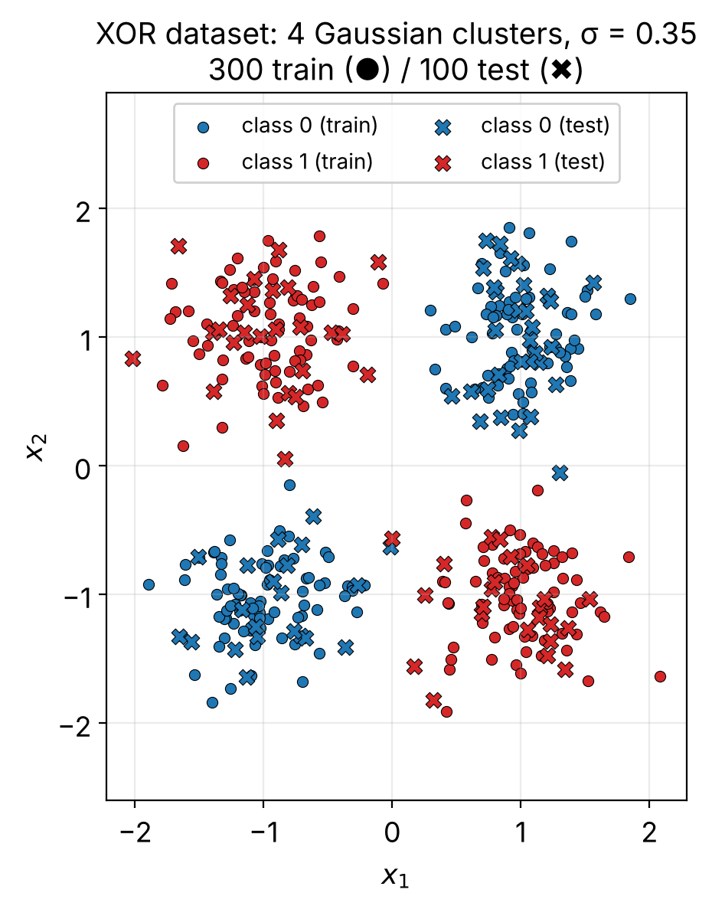
An exhaustive search over 361 angles × 241 offsets finds that no line exceeds 75.7 % training accuracy (the theoretical ceiling is 75 %: one cluster is always on the wrong side). Both class means sit almost at the origin, (−0.077, −0.075) and (0.033, 0.014), so there is nothing for a linear boundary to grab.
Hand-built 2-ReLU solution ReLU(s) + ReLU(−s) = |x₁+x₂|, then a logit 3 − 3h: 96.0 % train / 95.0 % test with no training at all.
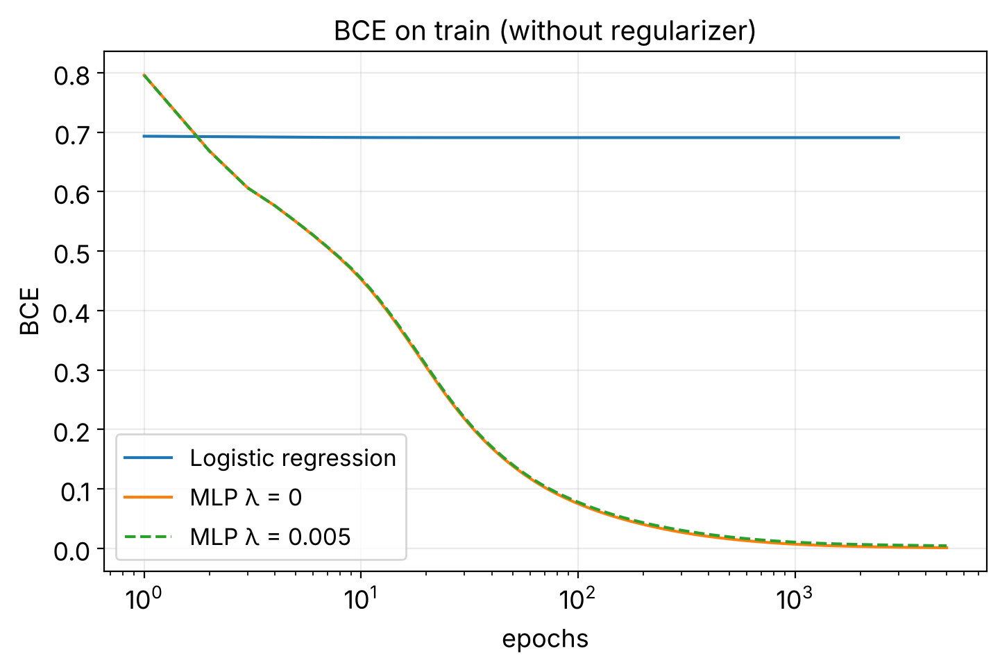
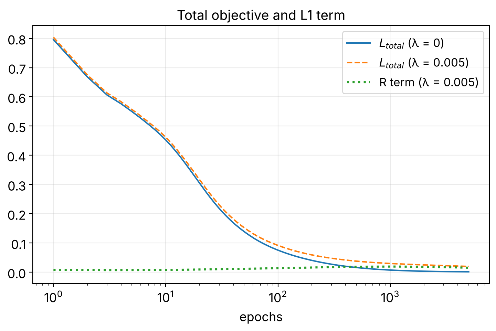
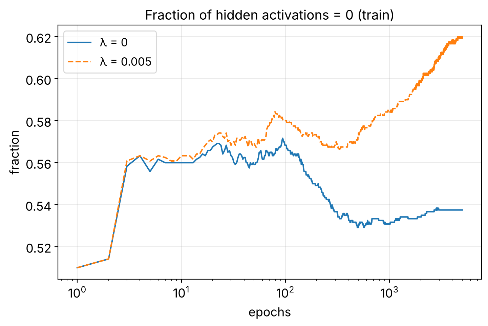
ReLU already zeroes about half of the hidden activations by itself (53.8 % at λ = 0). The L1 term pushes active pre-activations down, so more samples fall on the off side of each hidden line: 62.0 % at λ = 0.005, with the mean |A₁| dropping from 1.66 to 0.76.
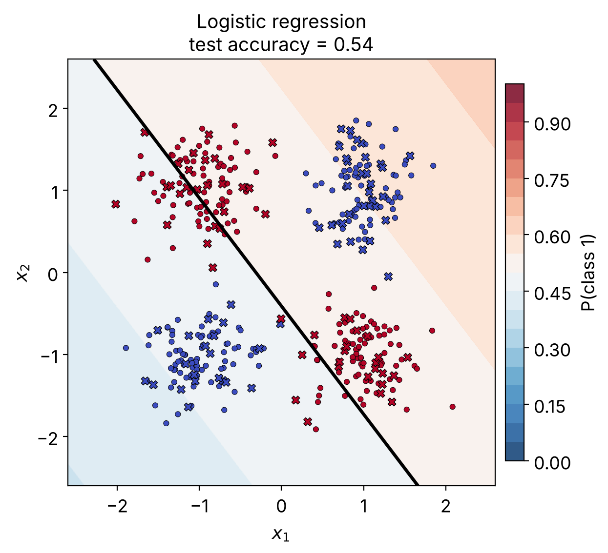
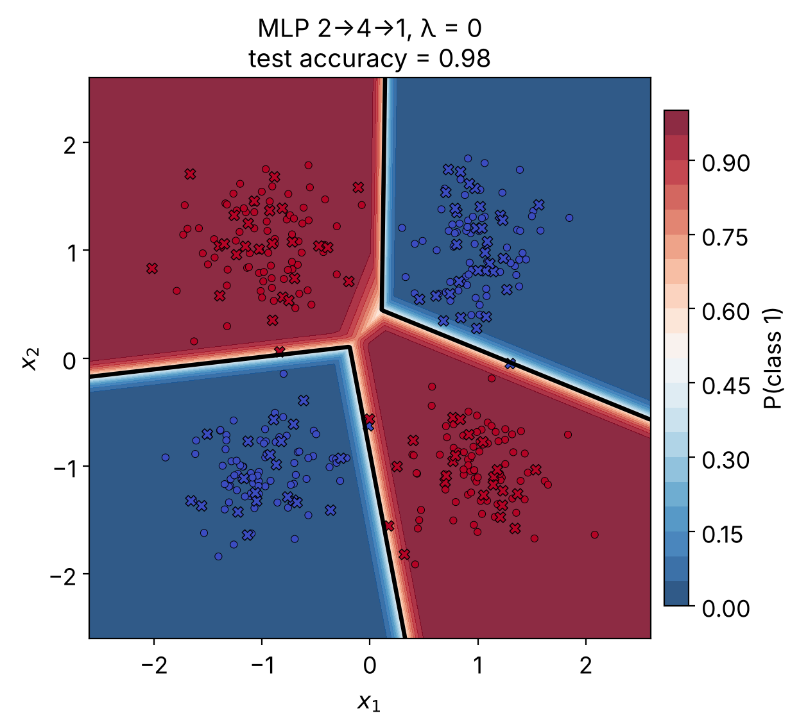
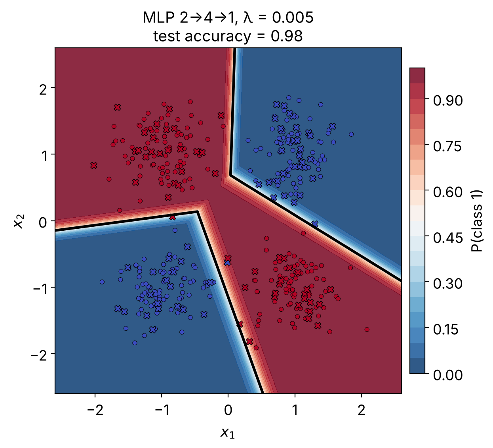
| Test acc. | Test BCE | |
|---|---|---|
| Logistic reg. | 0.54 | 0.7067 |
| MLP λ = 0 | 0.98 | 0.0332 |
| MLP λ = 0.005 | 0.98 | 0.0565 |
Crosses mark the 100 test points; the few crossing the boundary are the 2 test errors of each MLP.
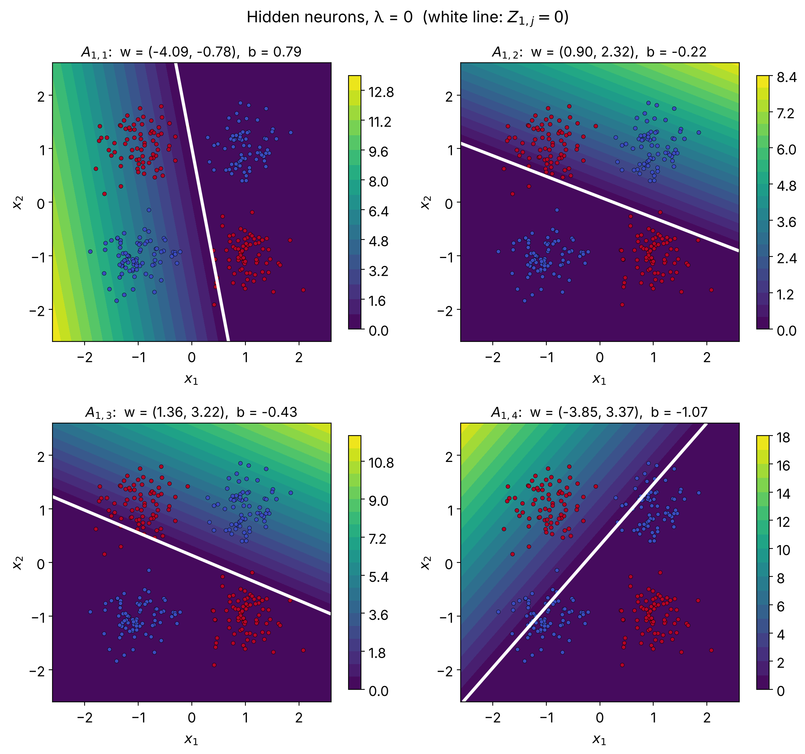
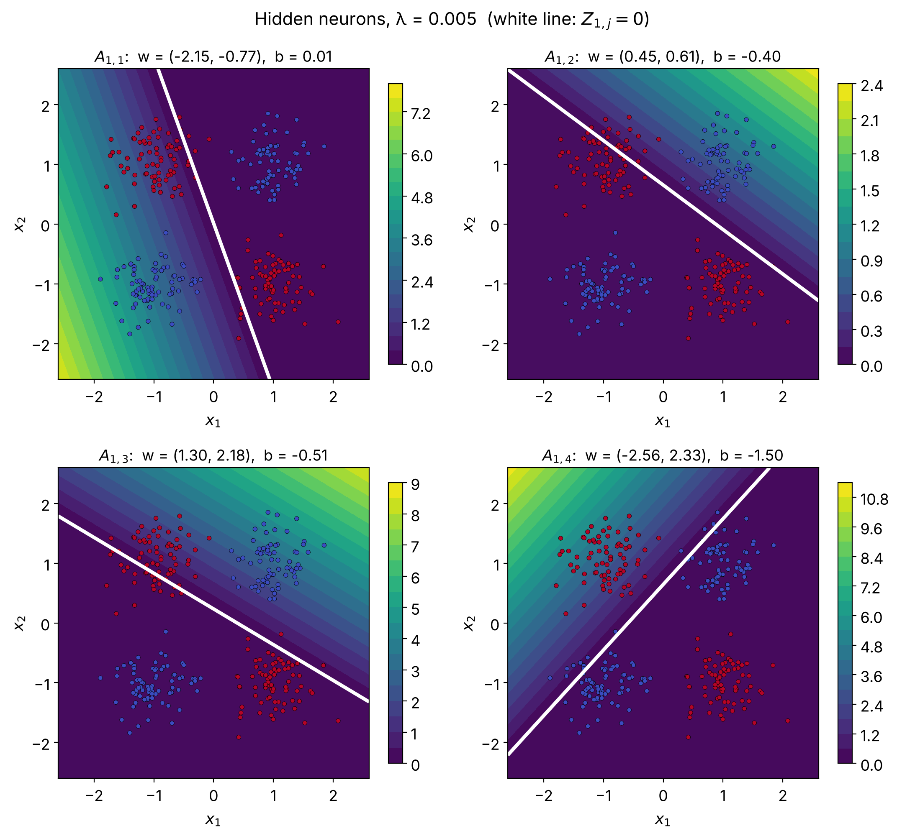
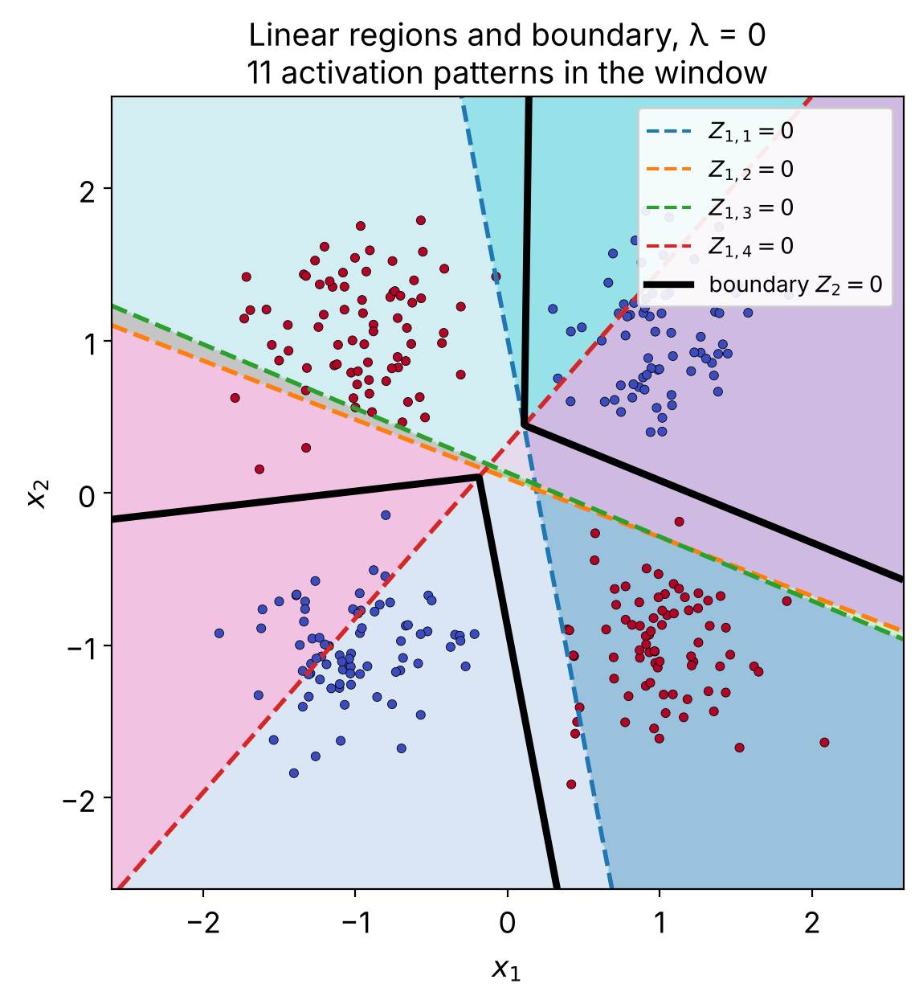
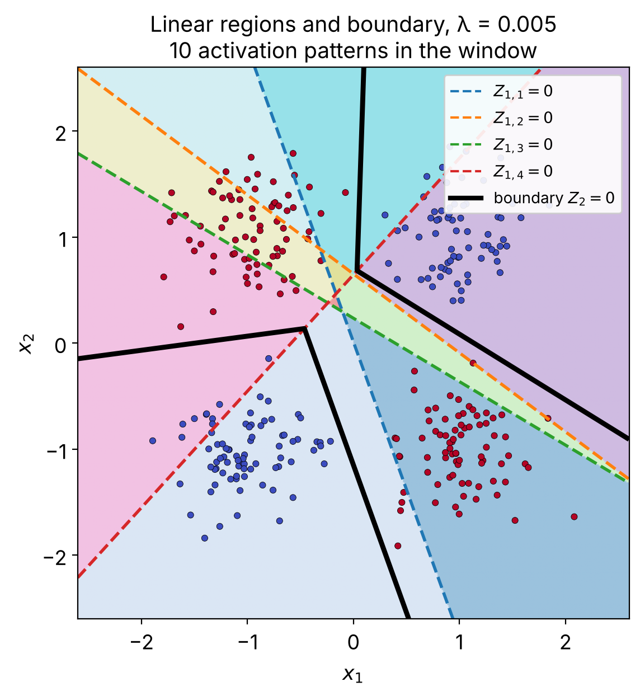
| Logistic reg. | MLP λ = 0 | MLP λ = 0.005 | |
|---|---|---|---|
| Train accuracy | 0.657 | 1.000 | 1.000 |
| Test accuracy | 0.540 | 0.980 | 0.980 |
| Train BCE (unregularized) | 0.6908 | 0.0011 | 0.0043 |
| Test BCE (unregularized) | 0.7067 | 0.0332 | 0.0565 |
| R term (train) | n/a | 0 | 0.0152 |
| Total train objective | 0.6908 | 0.0011 | 0.0195 |
| Fraction of A₁ = 0 (train / test) | n/a | 0.538 / 0.525 | 0.620 / 0.593 |
| Mean |A₁| (train / test) | n/a | 1.661 / 1.671 | 0.759 / 0.767 |
| Gradient check, rel. error W₁ / W₂ | n/a | 6.7·10⁻¹¹ / 5.9·10⁻¹⁰ † | 6.9·10⁻¹⁰ / 1.0·10⁻⁹ |
* The check was run at the initial point (λ = 0.005: 1.1·10⁻¹⁰ / 9.3·10⁻¹¹; λ = 5: 1.5·10⁻¹⁰ / 4.1·10⁻¹⁰) and on the trained λ = 0.005 model (printout below). † Trained λ = 0 model: same gradient_check function, run by scripts/make_figures.py (it is not printed in the notebook); values at this level vary slightly between machines. Differences between analytic and numerical gradients are at the level of the finite-difference noise, and no check straddled a ReLU kink.
--- trained model (lam=0.005) | neuron j=0, fraction active=0.51
min|Z1[:,j]| = 2.03e-02 vs slope 2.1e-06 -> no kink crossed: True
W1[0, 0]: analytic=-0.0002090896 | numerical=-0.0002090896 | relative error=6.90e-10
W2[0, 0]: analytic=+0.0008345272 | numerical=+0.0008345272 | relative error=1.03e-09
| λ | Test BCE | Test acc. | L_total (train) | Fraction A₁ = 0 | Mean |A₁| |
|---|---|---|---|---|---|
| 0 | 0.0332 | 0.98 | 0.0011 | 0.538 | 1.661 |
| 0.005 | 0.0565 | 0.98 | 0.0195 | 0.620 | 0.759 |
| 0.05 | 0.0813 | 0.97 | 0.0695 | 0.720 | 0.231 |
| 0.5 | 0.5202 | 0.72 | 0.5810 | 0.946 | 0.015 |
| 2.0 | 0.6938 | 0.48 | 0.6931 | 1.000 | 0.000 |
| 5.0 | 0.6938 | 0.48 | 0.6931 | 1.000 | 0.000 |
Same data and initialization for every row. For λ ≥ 2 every hidden unit is off and the network collapses to a constant output (BCE = ln 2 ≈ 0.693).
Logistic regression stays at 54–66 % because no single line separates the diagonals; its loss never leaves ln 2. The MLP bends the boundary with its hidden lines and reaches 100 % train / 98 % test. With λ = 0.005 the fraction of zero activations rises from 54 % to 62 % and the mean activation magnitude drops by more than half (1.66 → 0.76): units 2 and 4 fire for 30 % of the samples instead of 47 % and 39 %, so their ramps carve tighter regions and the plane splits into one fewer activation pattern (10 instead of 11). Accuracy does not change (98 % test in both) and the unregularized test BCE is a little worse (0.033 → 0.057): at this strength L1 buys sparsity, not accuracy. The sweep confirms that sparser is not better by itself: accuracy slips at λ = 0.05 (97 %), falls to 72 % at λ = 0.5, and the network dies at λ ≥ 2.
Entries marked XOR address the XOR limitation of the perceptron directly.